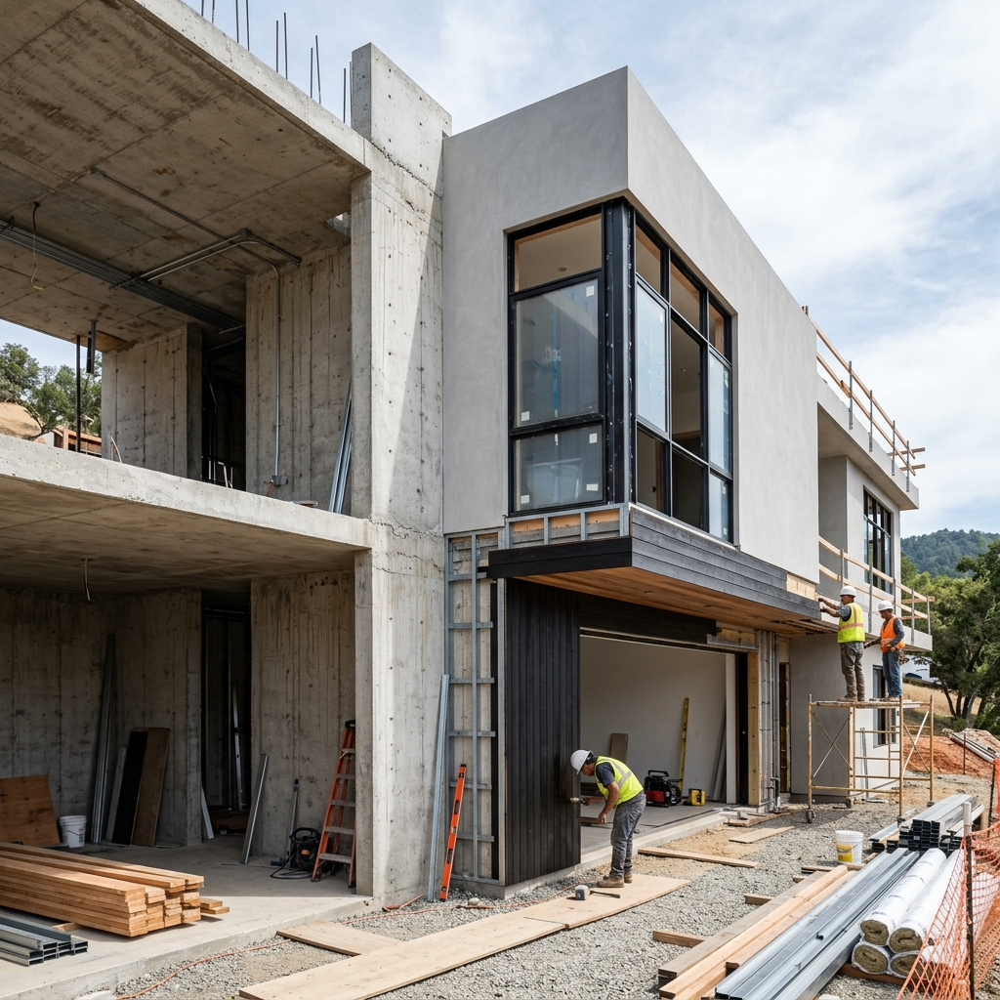

Residencial · Dirección de obra
Casa del Lago
Ordenar decisiones de materialidad, documentación y seguimiento en una vivienda de escala media.

Superficie
235 m2
Intervención
Dirección de obra
Estado
Caso conceptual
Resolución
Proceso, datos y decisiones visibles
Se estructuró un plan por etapas con hitos de avance, revisión de detalles críticos y registro de decisiones para el comitente.
Qué se comunica:
Tipo de obra, alcance, etapa y desafío real del proyecto.
Tipo de obra, alcance, etapa y desafío real del proyecto.
Por qué importa:
Ayuda a que el futuro cliente entienda si la constructora puede resolver una situación parecida.
Ayuda a que el futuro cliente entienda si la constructora puede resolver una situación parecida.